25/10/2026 · 8 mục sai minh họa + 37 mục chưa rõ nghĩa. 27 tranh mới dùng công cụ imagegen tích hợp, 14 tranh sẵn có được dùng đúng nghĩa, 4 sơ đồ số có chấm đếm.
Mỗi ảnh được đối chiếu với từ, nghĩa và ví dụ trong bài. Các nghĩa trừu tượng dùng tình huống hỗ trợ; người học vẫn đọc nghĩa và ví dụ bên cạnh. Không sửa đáp án, cách chấm hoặc tiến độ. Hai ảnh về ngôn ngữ có lời thoại ngắn; sơ đồ số có chữ số.
Sai minh họa xác nhận
square
quảng trường
Cảnh quảng trường lớp 6, tách khỏi hình vuông lớp 2.
flashcard.html [G6 unit4]
Mở ảnhSai minh họa xác nhận
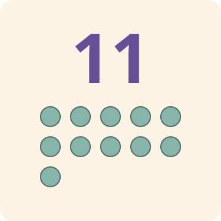
Eleven
mười một
Số 11 và 11 chấm đếm.
flashcard.html [G2 gsunit13]
Mở ảnhSai minh họa xác nhận
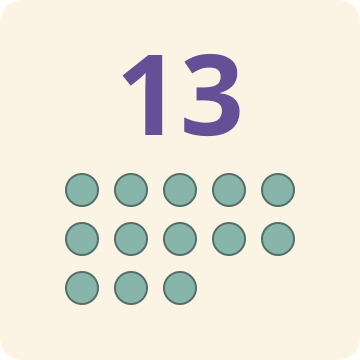
Thirteen
mười ba
Số 13 và 13 chấm đếm.
flashcard.html [G2 gsunit13]
Mở ảnhSai minh họa xác nhận
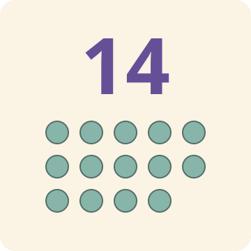
Fourteen
mười bốn
Số 14 và 14 chấm đếm.
flashcard.html [G2 gsunit13]
Mở ảnhSai minh họa xác nhận
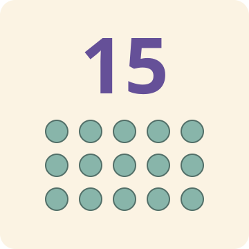
Fifteen
mười lăm
Số 15 và 15 chấm đếm.
flashcard.html [G2 gsunit13]
Mở ảnhSai minh họa xác nhận
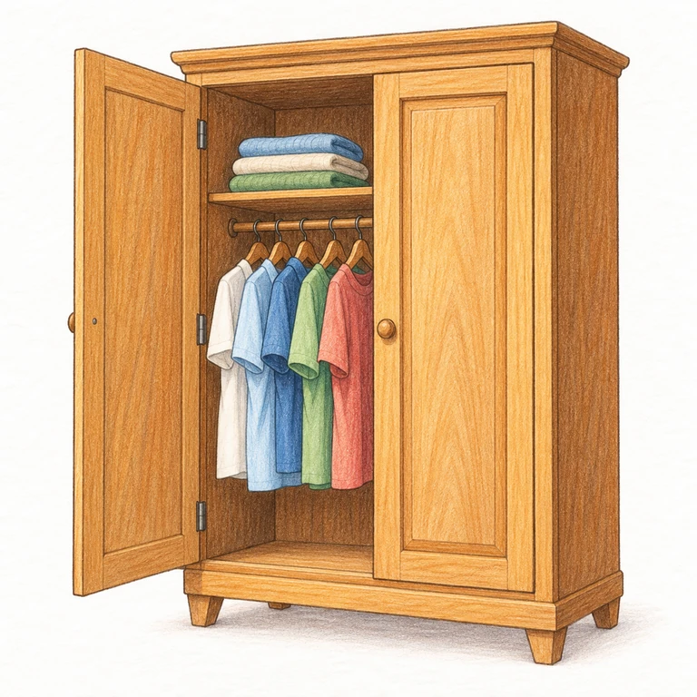
wardrobe
tủ quần áo
Tủ mở có quần áo treo và đồ gấp.
flashcard.html [G6 unit2]
Mở ảnhSai minh họa xác nhận
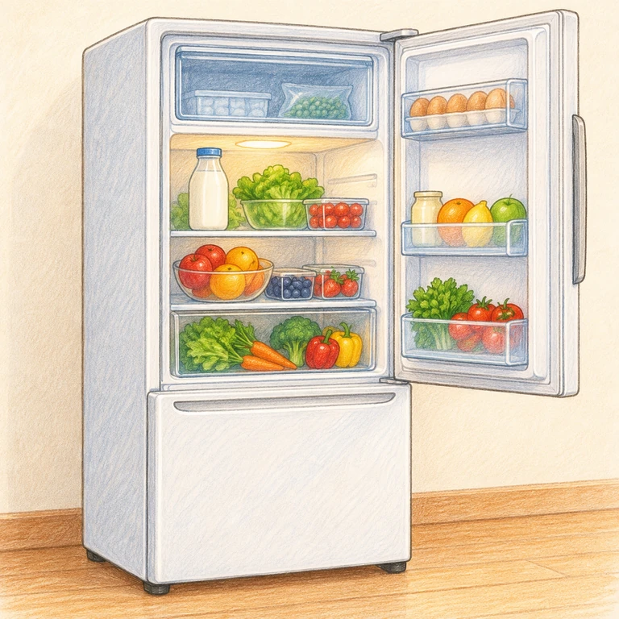
fridge
tủ lạnh
Tủ lạnh mở có ngăn và thực phẩm.
flashcard.html [G6 unit2]
Mở ảnhSai minh họa xác nhận
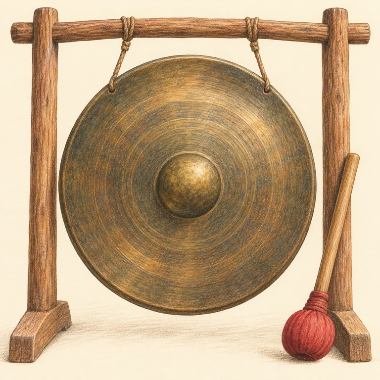
gong
cồng, chiêng
Chiêng tròn bằng đồng có núm, giá treo và dùi gõ.
flashcard.html [G8 unit4]
grade/lop8/unit4.html
Mở ảnhCần duyệt về độ rõ nghĩa
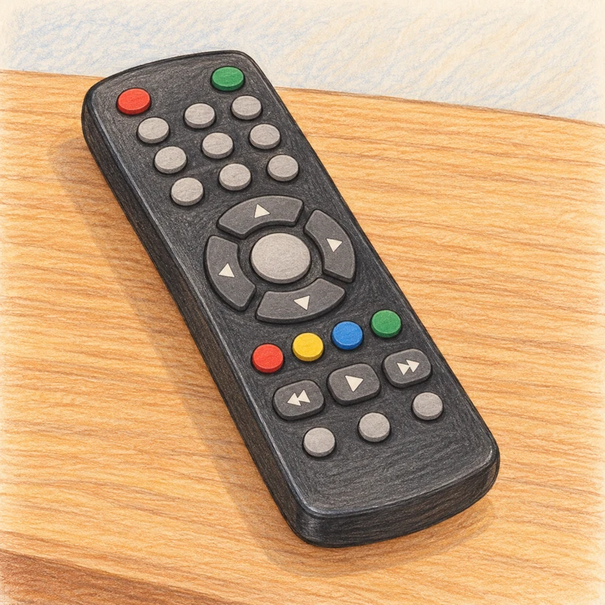
remote control
điều khiển từ xa
Chiếc điều khiển cầm tay có nút.
flashcard.html [G6 unit7]
Mở ảnhCần duyệt về độ rõ nghĩa
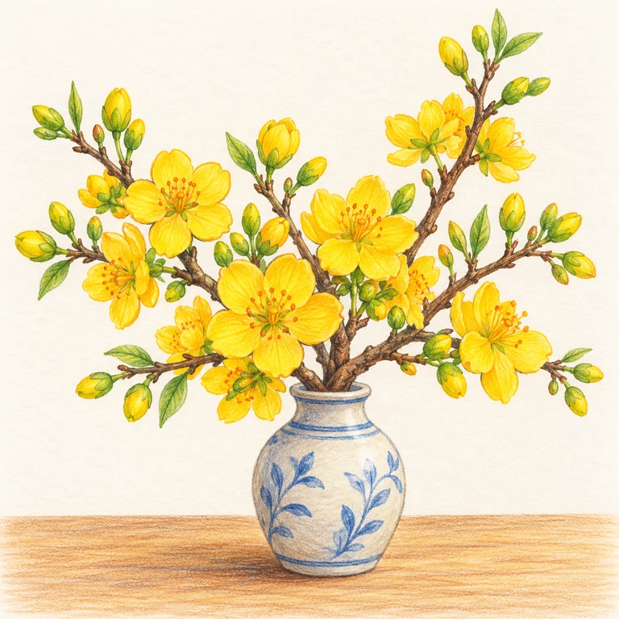
apricot blossom
hoa mai
Cành mai vàng năm cánh.
flashcard.html [G6 unit6]
Mở ảnhCần duyệt về độ rõ nghĩa
paddy field
ruộng lúa
Cả thửa ruộng ngập nước trồng nhiều hàng lúa.
flashcard.html [G8 unit2]
grade/lop8/unit2.html
Mở ảnhCần duyệt về độ rõ nghĩa
terraced field
ruộng bậc thang
Các tầng ruộng uốn theo sườn núi.
flashcard.html [G8 unit4]
grade/lop8/unit4.html
Mở ảnhCần duyệt về độ rõ nghĩa
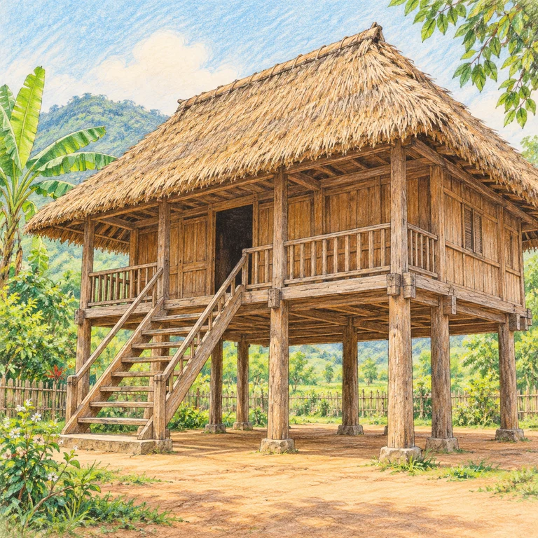
stilt house
nhà sàn
Nhà gỗ trên cột cao, có khoảng trống dưới sàn và cầu thang.
flashcard.html [G8 unit4]
grade/lop8/unit4.html
Mở ảnhCần duyệt về độ rõ nghĩa
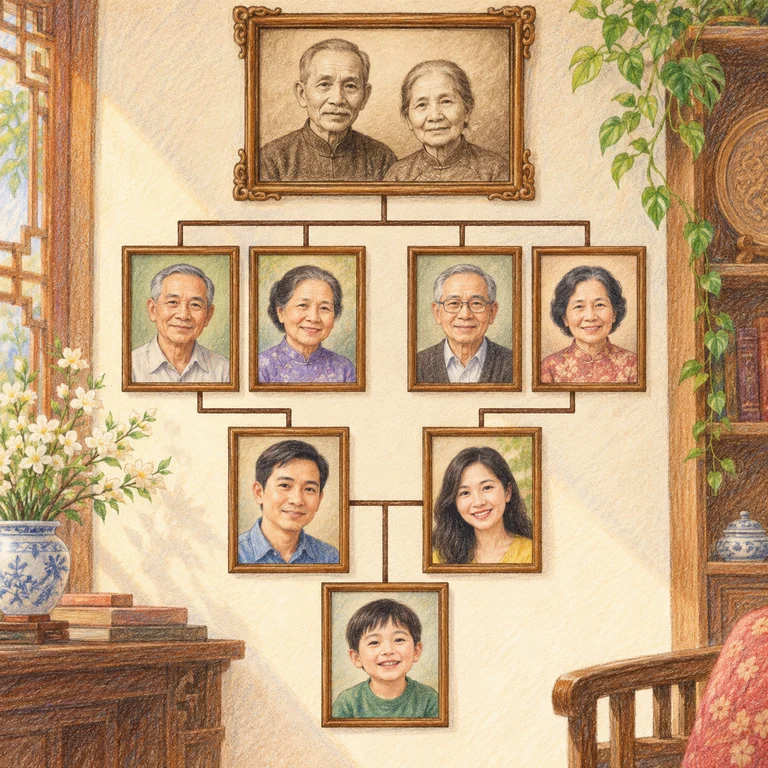
ancestor
tổ tiên
Gia phả bằng chân dung nhiều thế hệ.
flashcard.html [G8 unit5]
grade/lop8/unit5.html
Mở ảnhCần duyệt về độ rõ nghĩa
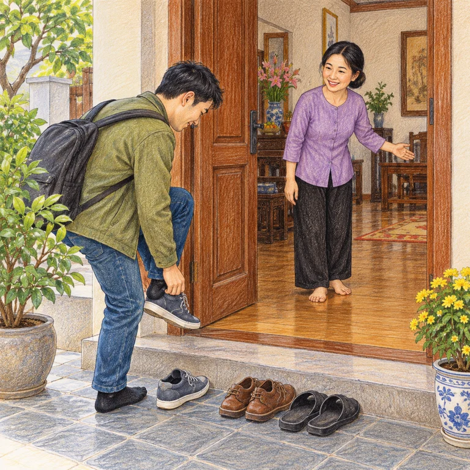
custom
phong tục
Khách tháo giày ở cửa, khớp ví dụ trong bài.
flashcard.html [G8 unit5, G12 unit2]
grade/lop8/unit5.html
Mở ảnhCần duyệt về độ rõ nghĩa
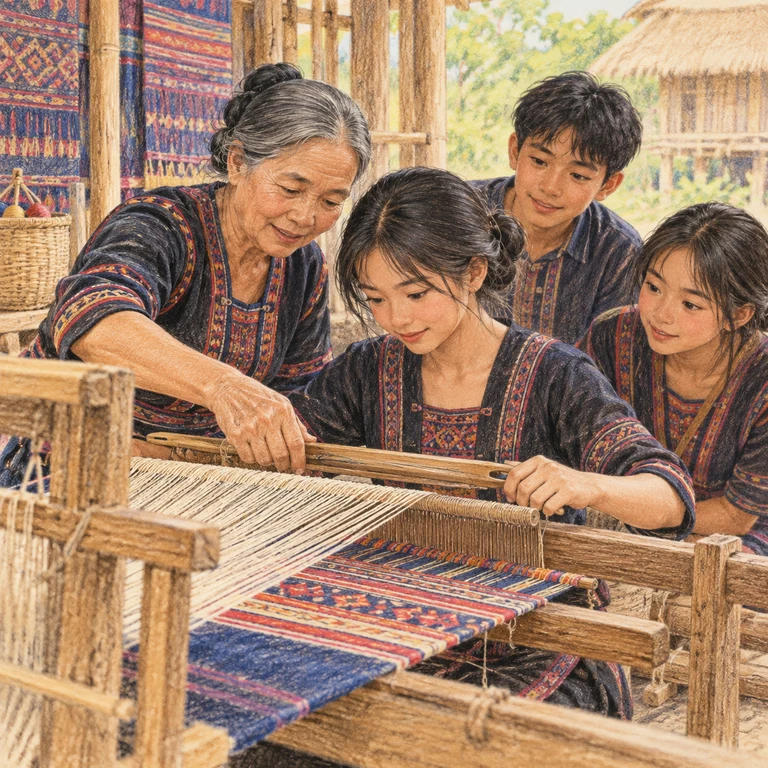
tradition
truyền thống
Người lớn tuổi truyền nghề dệt cho thế hệ sau.
flashcard.html [G8 unit5]
grade/lop8/unit5.html
Mở ảnhCần duyệt về độ rõ nghĩa
customer
khách hàng
Người mua cầm giỏ hàng đang thanh toán.
flashcard.html [G8 unit8]
grade/lop8/unit8.html
Mở ảnhCần duyệt về độ rõ nghĩa
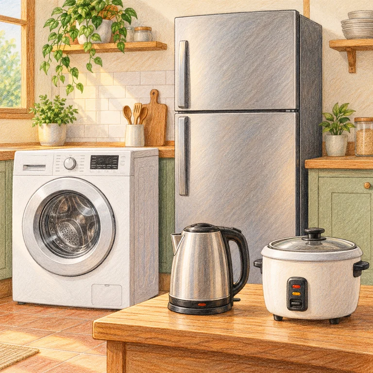
household appliance
đồ gia dụng
Máy giặt, tủ lạnh, ấm điện và nồi cơm điện.
flashcard.html [G9 unit6]
grade/lop9/unit6.html
Mở ảnhCần duyệt về độ rõ nghĩa
polar region
vùng cực
Cả vùng băng tuyết, sông băng và biển băng.
flashcard.html [G9 unit10]
grade/lop9/unit10.html
Mở ảnhCần duyệt về độ rõ nghĩa
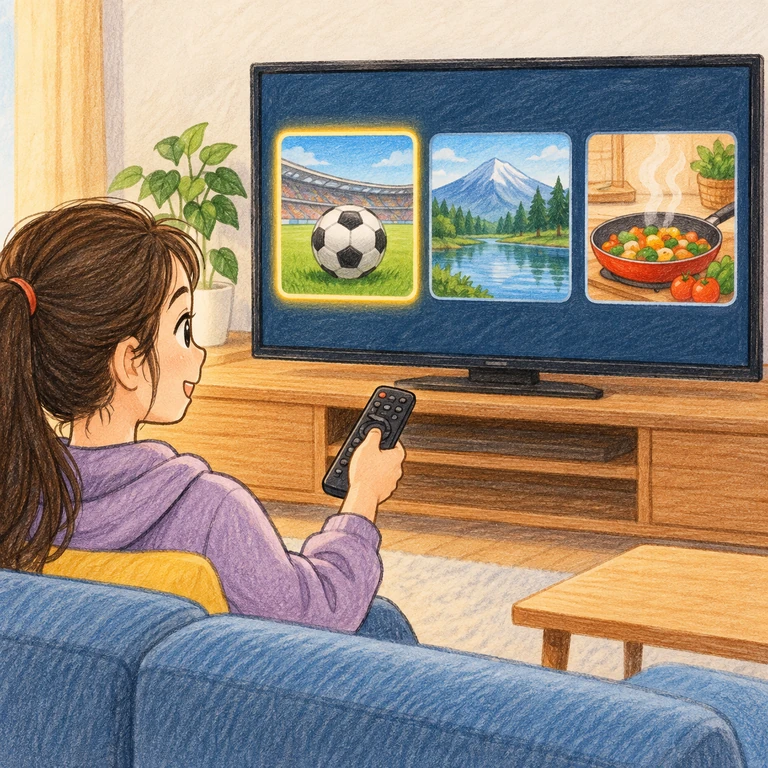
channel
kênh truyền hình
Người chọn các chương trình khác nhau trên TV.
flashcard.html [G6 unit7]
Mở ảnhCần duyệt về độ rõ nghĩa
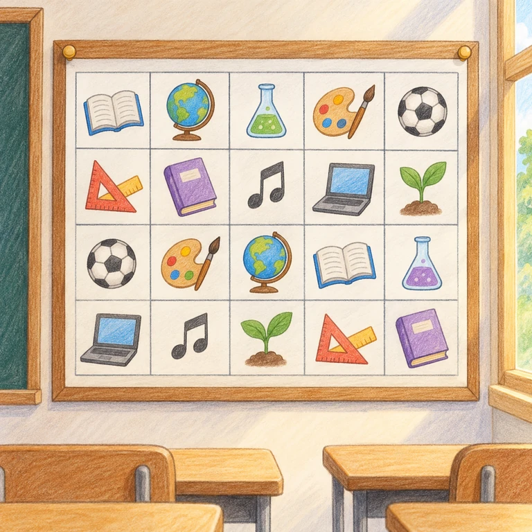
timetable
thời khóa biểu
Bảng lưới các môn học theo cột và hàng, dùng tranh Unit đã có.
flashcard.html [G6 unit1]
Mở ảnhCần duyệt về độ rõ nghĩa
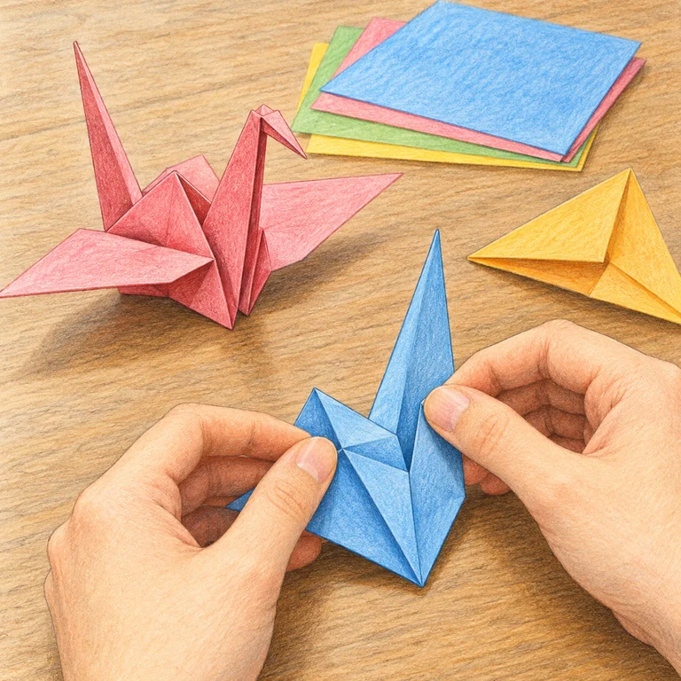
origami
nghệ thuật gấp giấy
Hạc giấy, nếp gấp và bàn tay đang gấp.
flashcard.html [G8 unit1]
grade/lop8/unit1.html
Mở ảnhCần duyệt về độ rõ nghĩa
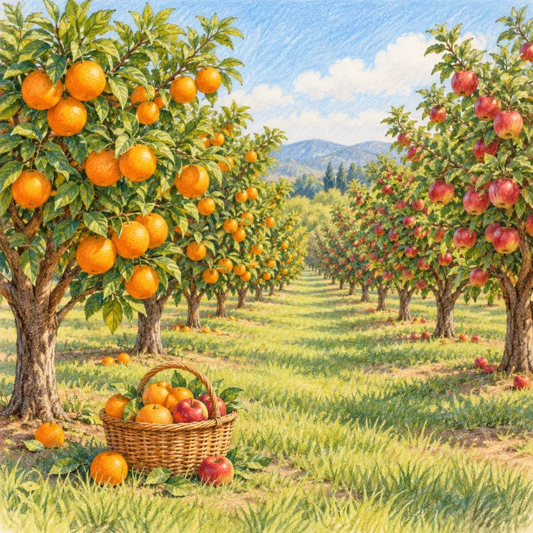
orchard
vườn cây ăn quả
Nhiều hàng cây mang quả trong vườn.
flashcard.html [G8 unit2]
grade/lop8/unit2.html
Mở ảnhCần duyệt về độ rõ nghĩa
peer pressure
áp lực từ bạn bè đồng trang lứa
Các bạn gây sức ép với học sinh đang lưỡng lự.
flashcard.html [G8 unit3]
grade/lop8/unit3.html
Mở ảnhCần duyệt về độ rõ nghĩa
bullying
hành vi bắt nạt
Học sinh bị chế giễu, giáo viên can thiệp.
flashcard.html [G8 unit3, G11 unit9]
grade/lop8/unit3.html
Mở ảnhCần duyệt về độ rõ nghĩa
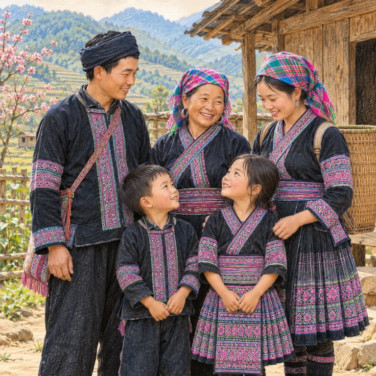
ethnic group
nhóm dân tộc
Nhóm gia đình có trang phục văn hóa chung; minh họa khái niệm, không phải tư liệu nhận diện một dân tộc.
flashcard.html [G8 unit4]
grade/lop8/unit4.html
Mở ảnhCần duyệt về độ rõ nghĩa
habit
thói quen
Đánh răng lặp lại qua ba buổi sáng có lịch ngày.
flashcard.html [G8 unit6]
grade/lop8/unit6.html
Mở ảnhCần duyệt về độ rõ nghĩa
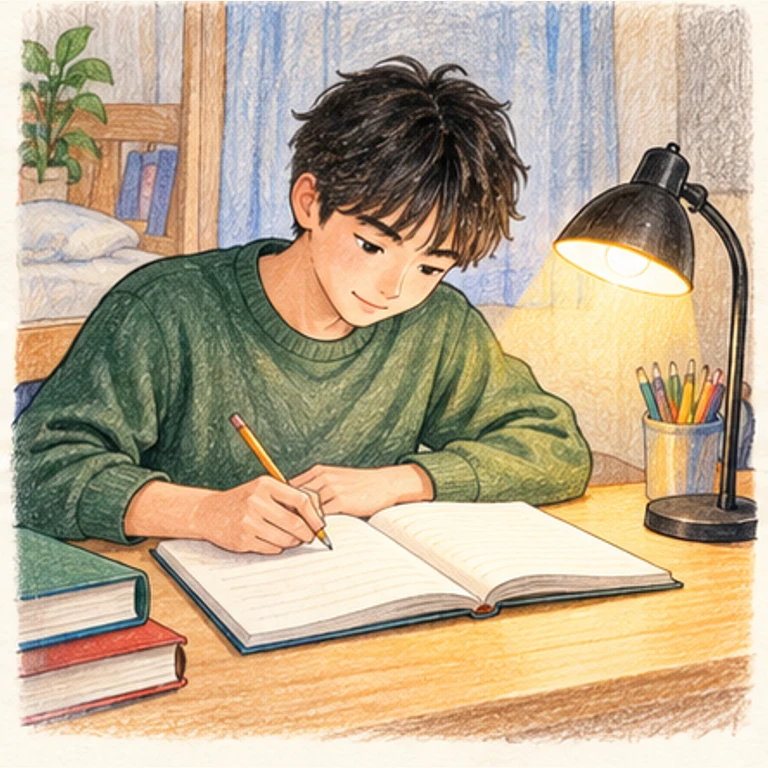
independent
tự lập
Học sinh tự học và tự làm bài.
flashcard.html [G8 unit6]
grade/lop8/unit6.html
Mở ảnhCần duyệt về độ rõ nghĩa
landslide
sạt lở đất
Đất đá đang trượt từ sườn núi xuống đường.
flashcard.html [G8 unit9]
grade/lop8/unit9.html
Mở ảnhCần duyệt về độ rõ nghĩa
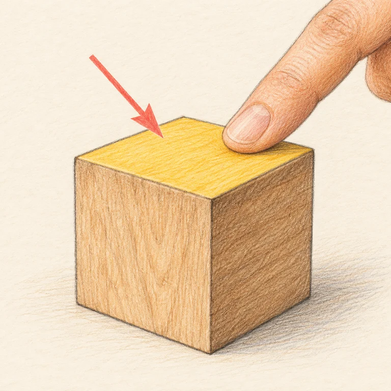
surface
bề mặt
Ngón tay và mũi tên chỉ mặt ngoài của khối gỗ.
flashcard.html [G8 unit12]
grade/lop8/unit12.html
Mở ảnhCần duyệt về độ rõ nghĩa
ancient
cổ xưa
Di tích đá phong hóa, đổ vỡ và rễ cây lâu năm.
flashcard.html [G9 unit4]
grade/lop9/unit4.html
Mở ảnhCần duyệt về độ rõ nghĩa
rainforest
rừng mưa nhiệt đới
Rừng nhiều tầng tán, dây leo, dương xỉ và mưa.
flashcard.html [G9 unit7]
grade/lop9/unit7.html
Mở ảnhCần duyệt về độ rõ nghĩa
bilingual
sử dụng được hai ngôn ngữ
Cùng người nói dùng Hello! và Xin chào!, thể hiện hai ngôn ngữ.
flashcard.html [G9 unit9]
grade/lop9/unit9.html
Mở ảnhCần duyệt về độ rõ nghĩa
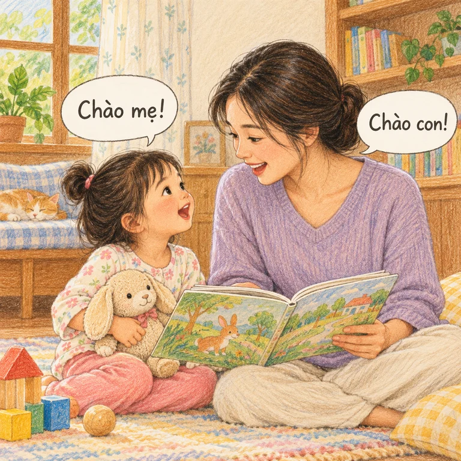
mother tongue
tiếng mẹ đẻ
Mẹ và con nhỏ trò chuyện bằng tiếng Việt trong gia đình.
flashcard.html [G9 unit9]
grade/lop9/unit9.html
Mở ảnhCần duyệt về độ rõ nghĩa
strength
điểm mạnh
Các năng lực và lựa chọn nghề nghiệp, không còn cơ bắp.
flashcard.html [G9 unit12, G12 unit9]
grade/lop9/unit12.html
Mở ảnhCần duyệt về độ rõ nghĩa
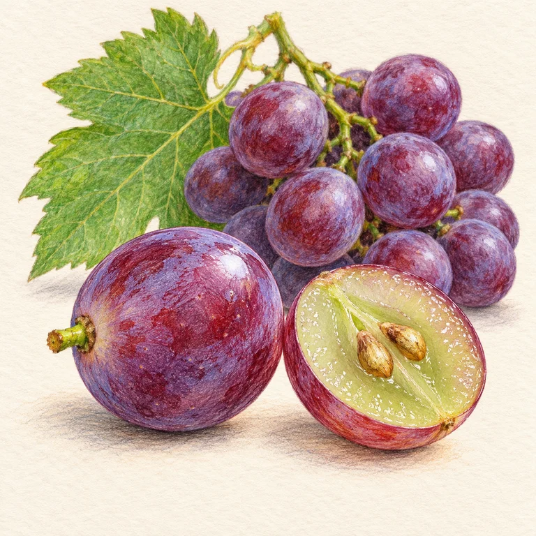
Grape
Quả nho
Quả nho, nửa quả có hạt nhỏ và chùm nho giúp phân biệt với mận.
grade/lop2/fruits.html
Mở ảnhCần duyệt về độ rõ nghĩa
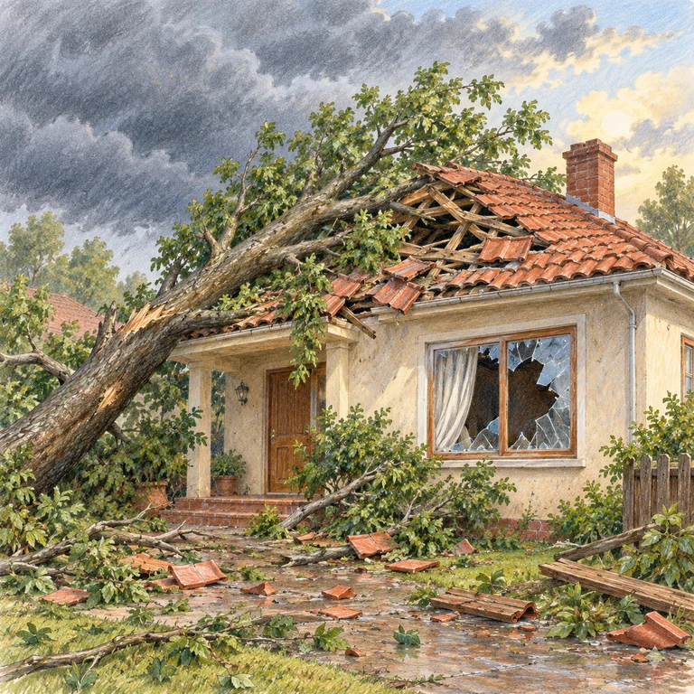
Damage
Thiệt hại
Mái nhà và kính cửa bị hỏng sau bão.
flashcard-previous.html · assets/js/pages/flashcard.js
Mở ảnhCần duyệt về độ rõ nghĩa
Manage
Quản lý, xoay xở
Bình tĩnh sắp xếp nhiều nhiệm vụ vào kế hoạch.
flashcard-previous.html · assets/js/pages/flashcard.js
Mở ảnhCần duyệt về độ rõ nghĩa
Reduce
Giảm bớt
So sánh trước/sau: ít tiền chi ra và ít túi mua hơn.
flashcard-previous.html · assets/js/pages/flashcard.js
Mở ảnhCần duyệt về độ rõ nghĩa
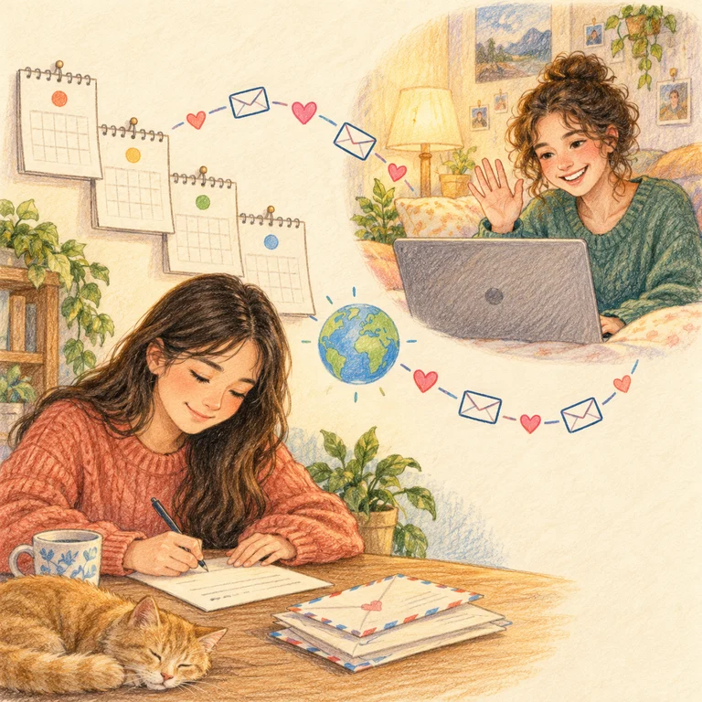
Maintain
Duy trì
Giữ liên lạc bạn bè qua thư và cuộc gọi lặp lại theo thời gian, khớp ví dụ duy trì quan hệ.
flashcard-previous.html · assets/js/pages/flashcard.js
Mở ảnhCần duyệt về độ rõ nghĩa
Compensation
Tiền lương, bồi thường
Người lao động nhận tiền công: nghĩa tiền lương trong định nghĩa/ví dụ, không bao quát mọi nghĩa bồi thường.
flashcard-previous.html · assets/js/pages/flashcard.js
Mở ảnhCần duyệt về độ rõ nghĩa
Termination
Sự chấm dứt, kết thúc
Hợp đồng bị hủy, trả lại chìa khóa.
flashcard-previous.html · assets/js/pages/flashcard.js
Mở ảnhCần duyệt về độ rõ nghĩa
Negotiate
Đàm phán, thương lượng
Hai bên trao đổi đề xuất giá khác nhau.
flashcard-previous.html · assets/js/pages/flashcard.js
Mở ảnhCần duyệt về độ rõ nghĩa
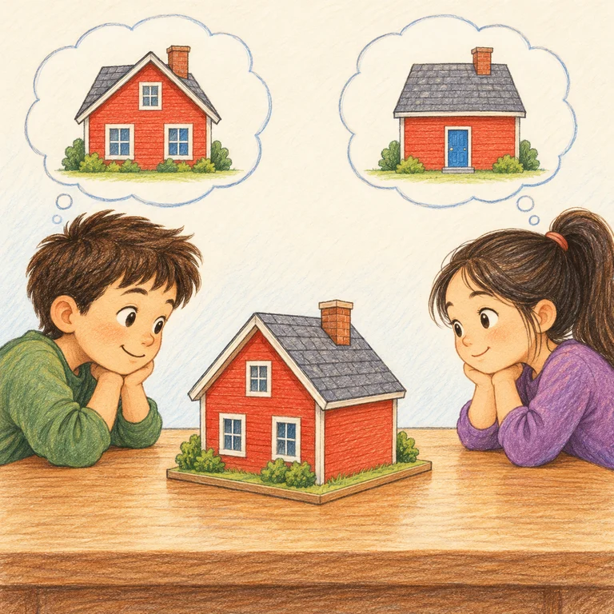
Perspective
Góc nhìn, quan điểm
Hai người nhìn cùng mô hình từ hai phía, có góc nhìn khác nhau.
flashcard-previous.html · assets/js/pages/flashcard.js
Mở ảnhCần duyệt về độ rõ nghĩa
Island
Hòn đảo
Vùng đất được nước bao quanh, thấy trọn đường bờ đảo.
flashcard-previous.html · assets/js/pages/flashcard.js
Mở ảnh